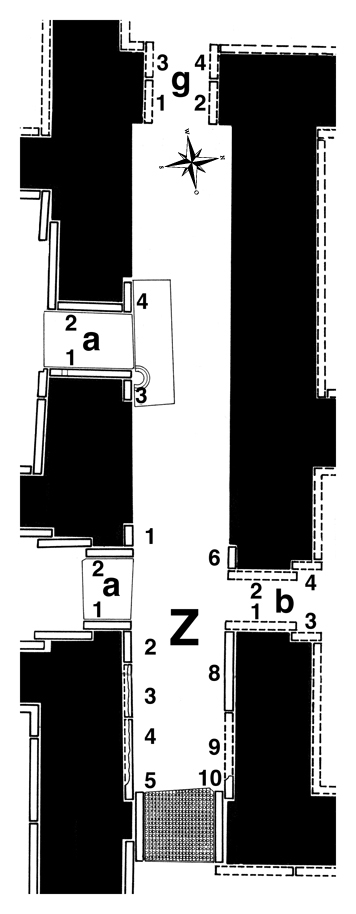

Room Z
Room Z was a narrow passage that connected courtyard Y with the west wing of the palace. Only its eastern end has survived. Layard found here nine slabs (plus six in the doorways). Paley and Sobolewski point out that the designations on Layard’s Plan III for this room are faulty: there is no Z-1, though it is mentioned in the text and there is no slab base in position Z-7, probably a door. Layard sent three complete reliefs (Z-1, Z-2, Z-a-1) and one figure from a fourth (Z-8) to the British Museum; three slabs (Z-4, Z-a-2, Z-b-1) are lost, and the bottom parts of two more (Z-5, Z-10) are still in situ.
Click on Z in the middle of the room to see all panels positioned in their respective walls, or on the individual panels along the inner walls and in the entryways to go to CDLI pages associated with them.
 |
Relief Slabs by Collection (duplication results from individual fragments in different places) British Museum, London, UK |